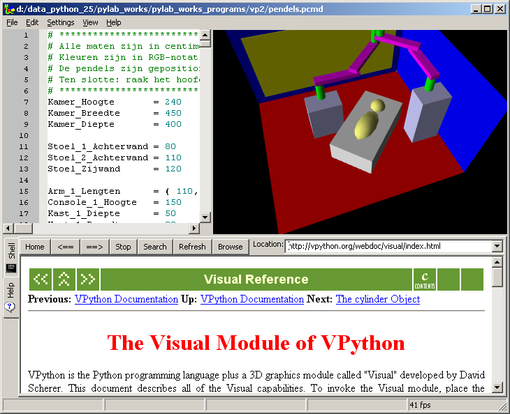

Animations / Screen-shots  ( november 2008 )
( november 2008 )
Introduction
This page contains a number of screen-shots and links to animated movies of "PyLab Works". The screen-shots / animations below are in reversed chronological order, i.e. the newest screen-shot / animation is on top.
Until now all screen-shots / animations are made during code cleanup and bug fixing of the very first "proof of concept" version, Therefore you might see somes notes about the specific bug in the description or you might even see the bugs in the demo.
For the time being, the actual documentation can be found here (chapter PyLab Works).
VPython, 3D Scene, CMD-Shell
By combining a code-editor, VPython and a cmd-shell, a quit powerful environment for 3D scenes can be created. These 3D scenes can be used to show physics or to visualize real world environments. Here a flash movie ( 10 min, 20 MB) can be seen.
|
 |
Simple Physics (todo)
This example shows a scenery, where you can place objects, e.g. a canon and a target and by controlling the parameters (i.e. launching angle, ignition energy, gravity, mass of the bullet, wind) you can try to hit the target. The example also includes a code editor, where you can make your pre-calculations. A first attempt can be seen here.

RealTime DataAcquisition
... Shows realtime data-acquisition with hardware AD-cards. Unfortunately this only works on MS-Windows. A number AD-cards is supported: SoundCard, FysioFlex, DataFile, National Instruments DAQmx - cards.
This demo also shows the internationalization feature of PyLab_Works.
Simple Math
Signal WorkBench (march 2008)
The signal workbench is highly sophisticated graphical calculator, specially equipped for off-line analysis of time series and development of algorithm for real-time analysis. The manual can be seen here. A practical example using the Signal WorkBench for a filter design.
|
|
|
|
|
Interactive HTML (january 2008)
Interactive HTML (2 MB, 3:00) , Showing an interactive HTML page with wxWidgets, that can be used for courses, to give instructions and getting the answers of students back. This demo also shows a few new features of the graphical calculator.
Graphical Calculator (january 2008)
Graph-Calc-Demo (2 MB, 5:30) , Create a quit sophisticated graphical calculator with just a few mouse clicks. The demo shows most of the possibilities of the graphical calculator. With a set of sliders (as shown in the figure below) you can easily change one or more parameters in your code and get directly feedback of the changes of these parameters to the total functions(s) results.
The demo also shows some of the major features of the code editor, like code-completion and code snippets manager.
` 
Generator + PyPlot (december 2007)
PyPlot-Demo (3.4 MB, 4:30) , Showing sine / square generator with a realtime XT-plot based on a slightly modified PyPlot.
Demonstrates how signals can be extended with extra features, in this case: signal color, line width and signal name.
This demo reveals a fundamental bug in unequal path lengths for some specific controls.
Probably PyPlot is too slow for fast realtime signals, so we'll also implement ScopePlot and for even more beautiful pictures we'll introduce MatPlot.
Proof of Concept (december 2007)
Proof of Concept (10MB, 8 minutes)
This demo shows the most important parts of the concept I've in mind. What you see is already working, and what I don't show you, is probably not yet implemented. Judge for yourself !